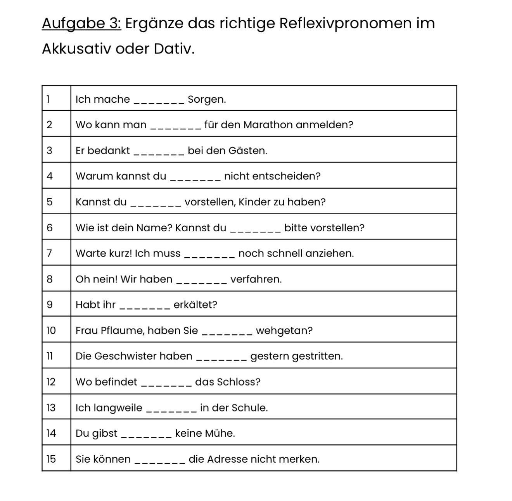
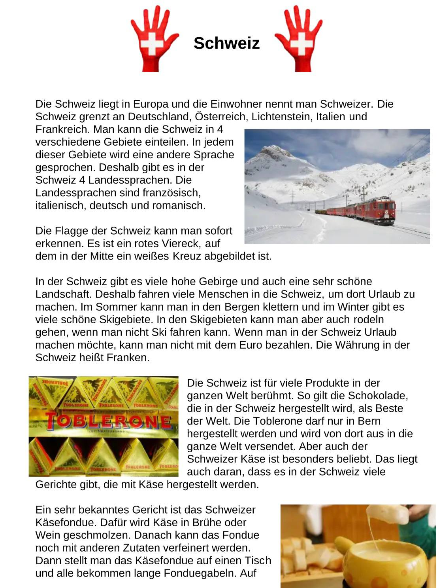
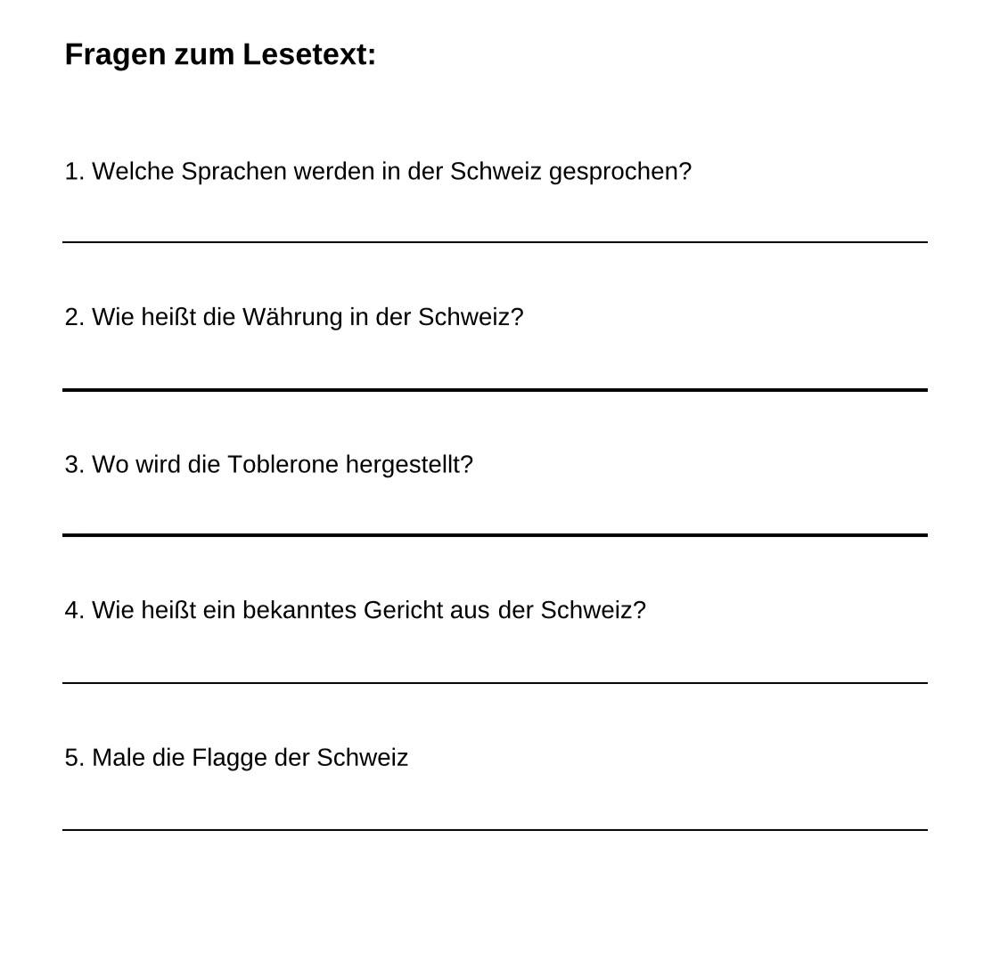
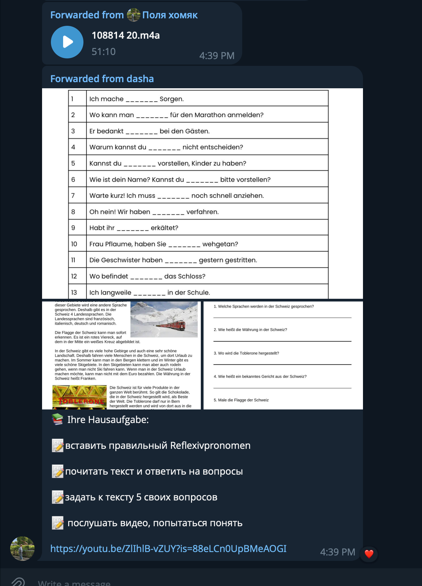

Разминка — настоящее аудирование Goethe-Zertifikat A2: пять коротких диалогов, по одному прослушиванию, выбор A/B/C — ровно как будет на экзамене. Потом — текст про общественный транспорт Цюриха (Wassertaxis по Лиммату и фуникулёры) и телерепортаж с Гуртена про Берн: смотровая башня, 130 000 жителей, медведи и ловушки «manche Berge bis zu 4000 Meter». Домашка — возвратные местоимения (15), текст про Швейцарию с вопросами и видео «Wie ist das Leben in der Schweiz?» — мостик к следующей теме, союзам.
Настоящее экзаменационное задание: «Sie hören fünf kurze Gespräche. Sie hören jeden Text einmal und wählen Sie die richtige Lösung» — каждый текст один раз, выбрать A, B или C. Даша: «говорят быстро — и это нормально; на экзамене никто не будет читать медленно». Вылавливаем знакомые слова и строим по ним логику. Слова, без которых не разобраться:
Сначала подумай сам, потом открывай пояснение.
Небольшой текст про Zürich и три утверждения richtig/falsch. Читаем, вылавливаем знакомое — и сверяем по строкам текста (как на экзамене Lesen: ответ всегда написан в тексте, надо только найти место).
Даша: «у меня сегодня настроение на Швейцарию» — репортаж с горы Гуртен (Gurten) рядом с Берном: ведущий Мартин Зюрcher жалуется на погоду, показывает фото со вчерашнего дня и рассказывает про город. Один кусок записи (08:29–08:32) не разобран — на конспект не влияет.
Как было → как надо. Звук — только правильный вариант.
Прислана в Telegram 26 ноября. Поля заполняются здесь и сохраняются в браузере. Ответы и переводы — мои, не Даши.
Лист «Aufgabe 3: Ergänze das richtige Reflexivpronomen im Akkusativ oder Dativ». Смотри на лицо (ich/du/er/man/Sie…) и на вопрос: кого? себя (Akk) или кому? себе (Dat). Есть строки в прошедшем времени (haben … gestritten) — тема следующих уроков, сейчас важен только местоименный вопрос.
Текст — ниже с переводом за кнопкой. Сначала прочитай сам, ответь на вопросы Даши в полях, свои 5 вопросов напиши в поле внизу.
Hallo Deutschschule, Lektion 56 (8:56). Задание Даши: «послушать, попытаться понять». При просмотре попробуй расслышать придаточные с weil, dass и wenn. Для сравнения — учебные примеры: Ich mag die Schweiz, weil hier alles sauber ist, Es stört mich, dass man immer so viel planen muss, Die Schweizer werden wütend, wenn man sie warten lässt. Союзы — тема занятия 28; видео с заданиями встроено на страницу 28.
Даша: «доделывайте предыдущую» — это домашка занятия 26 (отделяемые глаголы, возвратные, перевод 15) и лист с видео-диалогом занятия 25.

Возвратные местоимения
Текст: Швейцария
Вопросы к тексту
Сообщение Даши (домашка)💾 Всё, что ты напечатала, сохраняется автоматически в этом браузере. На другом устройстве не появится.
Все слова и фразы урока уже собраны в колоду ЗУБРа — с карточками, тестом, диктантом и расписанием повторений. Прогресс общий с остальными уроками.